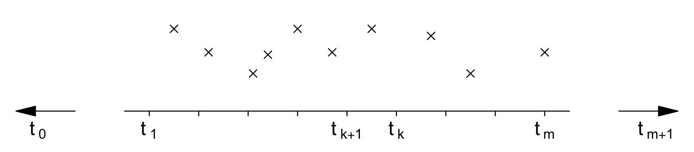
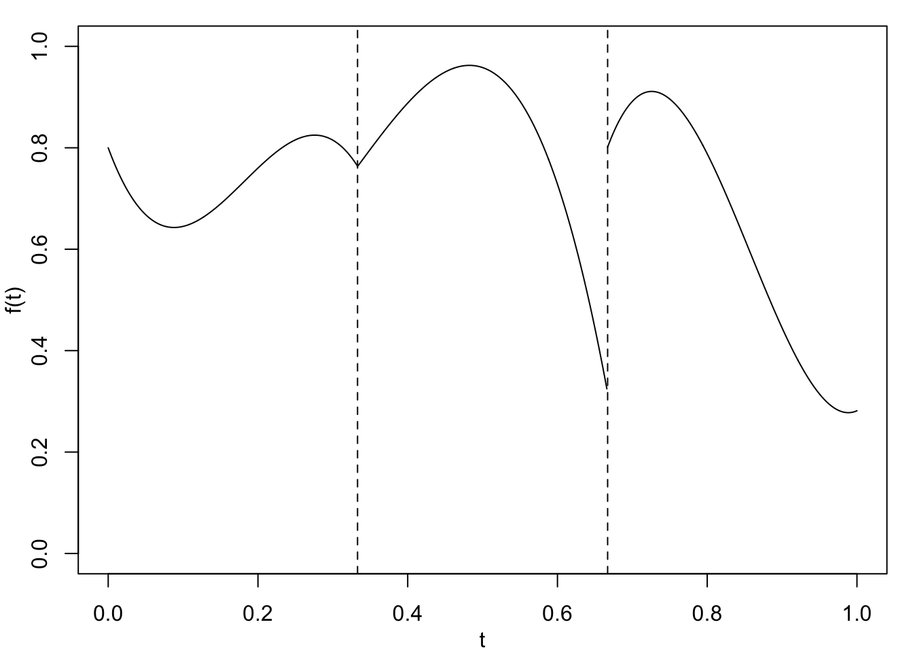
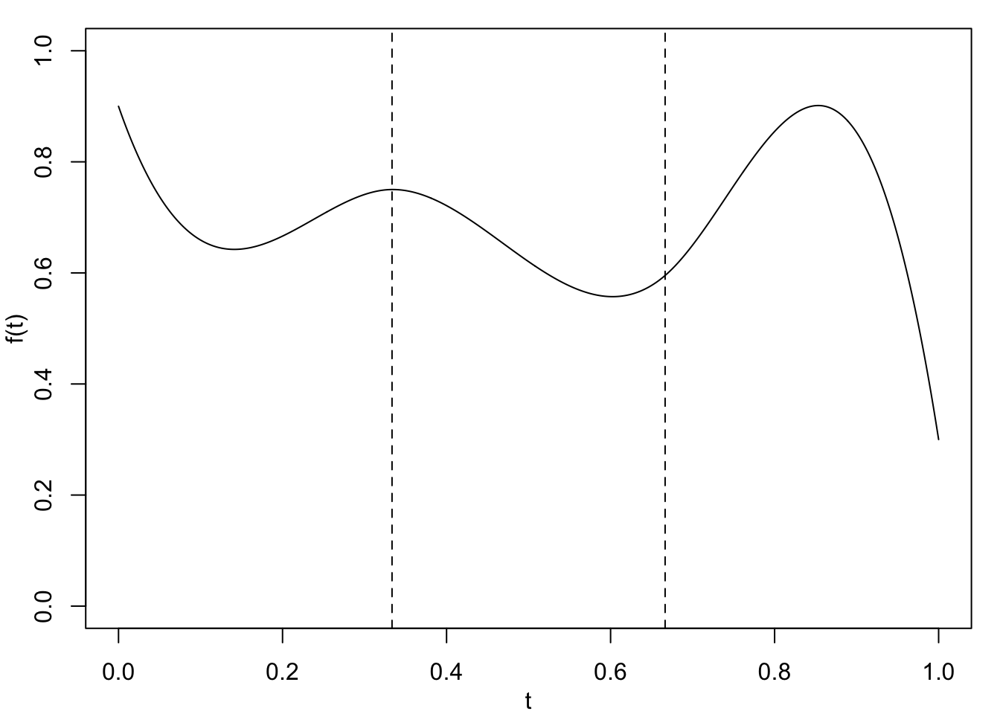

2 Introducing Splines
\[ \def\b#1{\mathbf{#1}} \]
2.1 Basic definitions
Let \(t_1 < t_2 < \ldots < t_m\) be a fixed set of sites or knots which need not correspond to observation locations, as in Figure 2.1.
Note that we use the symbol \(t\), rather than \(x\), so that we do not confuse knots and observation locations.
A spline of order \(p\geq 1\) is a piecewise-polynomial of order \(p\) which is \((p-1)\) times differentiable at the knots. Thus there are coefficients \(\{a_{k\ell},\; k=0,\ldots,m, \; \ell=0,\ldots,p\}\) such that \[ f(t) = \sum_{\ell=0}^p a_{k\ell} \; t^\ell,\qquad \text{for}~t_k \leq t <t_{k+1}, \tag{2.1}\] where we take \(t_0 = -\infty\) and \(t_{m+1} = +\infty\).
If we are using cubic polynomials, (\(p=3\)), then \(f\) is given by the following equations: \[ f(t) = a_{00} + a_{01} t + a_{02}t^2 +a_{03}t^3, \quad t_0 \le t < t_1 \] to the left of the first knot, \[ f(t) = a_{10} + a_{11} t + a_{12}t^2 +a_{13}t^3, \quad t_1 \le t < t_2 \] between the first and second knots, and so on until \[ f(t) = a_{m0} + a_{m1} t + a_{m2}t^2 +a_{m3}t^3, \quad t_m \le t < t_{m+1} \] to the right of the final knot. This is illustrated in Figure 2.2 (a) with \(m=2.\)


Focus on splines quiz
Test your knowledge recall and comprehension to reinforce basic ideas about splines.
Which of the following best describes the relationship between knots and data locations.
How many polynomial equations are need to define a cubic spline with four knots?
What is the highest power possible in a cubic spline?
How many times can a spline of order 5 be differentiated at the knots?
Which of the following is NOT a property of cubic splines?
2.2 Imposing smoothness
Because of the use of polynomials, \(f\) is smooth between each successive pair of knots. At the knots, however, \(f\) might not be continuous and it might not be differentiable – in such cases we would say that the function is not smooth.
To ensure that \(f\) is also smooth at each of the knots, we impose smoothness constraints which control continuity of the function and its derivatives at the knots.
Let \(f^{(\ell)}\) be the \(\ell\)-th order derivative, with \(f^{(0)}=f\) being the function itself, \(f^{(1)}=f'\) is the first derivative and \(f^{(2)}=f''\) the second derivative. Further, let \(f^{(\ell)}(t-\epsilon)\) and \(f^{(\ell)}(t+\epsilon)\), for \(\epsilon\ge 0\), denote evaluation of the function or its derivative at points just below and just above \(t\) – we will be interested in their relative values as \(\epsilon \rightarrow 0\).
To impose smoothness, we require that
\[ \lim _{\epsilon\rightarrow 0} f^{(\ell)}(t_k-\epsilon) = \lim _{\epsilon\rightarrow 0} f^{(\ell)}(t_k+\epsilon), \tag{2.2}\] for all \(k=1,\ldots,m\) and for \(\ell = 0,\ldots,(p-1)\).
In other words we say that \(f\) is smooth if the limits, from below and from above, of the function and its \((p-1)\) derivatives exist and are equal.
The meaning of these smoothness constraints is illustrated in Figure 2.2. In Figure 2.2 (a), a piecewise cubic function with two knots has been plotted. The first derivative, \(f'\), is discontinuous at the first knot and the function itself, \(f\), is discontinuous at the second knot. Figure 2.2 (b) shows a similar shaped cubic spline with two knots. This time, the function \(f\) and its first two derivatives are continuous at both knots.
The smoothness conditions in Equation 2.2 induce constraints on the coefficients \(\{a_{k\ell}\}\). A polynomial of order \(p\) has \(p+1\) coefficients, and there are \(m+1\) intervals when we have \(m\) knots. This leads to \((p+1)\times(m+1)\) coefficients but there are \(p\) constraints at each of the \(m\) knots. Thus the total degrees of freedom of the system is \[ \text{df}_{\text{spline}} = (p+1)(m+1) - pm = m+p+1. \tag{2.3}\]
These degrees of freedom provide the necessary flexibility in the spline.
Note that \(f\) is infinitely differentiable everywhere, except at the knots where it is \(p-1\) times differentiable. In particular, for \(p=1\), \(f\) is a linear spline comprising linear pieces constrained to be continuous at the knots, although the slope of \(f\) is discontinuous at the knots. Also, for \(p=3\), \(f\) is a cubic spline comprising cubic polynomial pieces continuous at the knots; where the first and second derivatives of \(f\) are also continuous, but the third derivative is discontinuous at the knots.
Focus on smoothness quiz
Test your knowledge recall and comprehension to reinforce basic ideas about smoothness.
Which of the following best describes the motivation for using smooth fitted models?
Which of the following best describes the motivation for using piecewise polynomial components?
Is the following a true statement? ‘The higher the order of the polynomial components the smoother the spline’
If a model fitted to a particular data set has zero degrees of freedom, then which of the following statements about the solution is most likely to be true?
Which of the following best describes spline modeling?
2.3 Exercises
2.1 Why is it not sensible to define a smooth function made-up of constant components? Similarly, why is not sensible to create a differentiable function from linear splines?
2.2 In the situation illustrated in Figure 2.2 (b), where \(p=3\) and \(m=2\), clearly identify the \((p+1)\times (m+1)=12\) model parameters and the \(pm=6\) smoothness constraints in terms of the cubic polynomials and their derivatives.
2.3 Further consider the situation illustrated in Figure 2.2 (b). Suppose now that we require the splines to pass through specified coordinates \((t_1, f(t_1))\) and \((t_2, f(t_2))\). What is the degrees of freedom for this model? How many such cubic splines would satisfy these constraints? Discuss potential additional constraints which would lead to a unique fitted model. Do you think having a unique solution is a positive or negative property?
2.4 For a general problem, what would be the effect of requiring additional constraints of the form of Equation 2.2 but with \(\ell = p\)? Would this lead to an acceptable fitted cubic spline model? Justify your answer.
For each case, think about the number of parameters for each component and the implications of any constraints.
Define a cubic polynomial for each interval and consider continuity and differentiability.
Think about the degrees of freedom, that is the total number of parameters and the number of constraints, including forcing the spine to pass through two points. Think about the implications of having zero and non-zero degrees of freedom. There are very many (infinitely many?) potential additional constraints, but suggest one or two which sound a good idea.
Think about the implication of this on the curvature of neighbouring components, and hence on overall curvature.